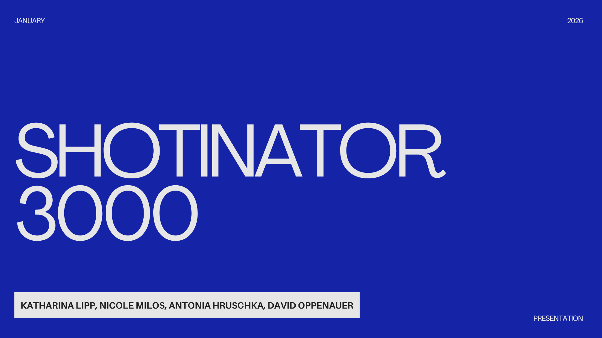
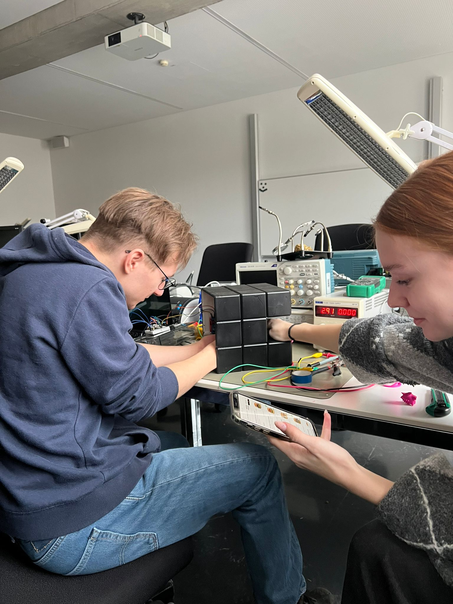
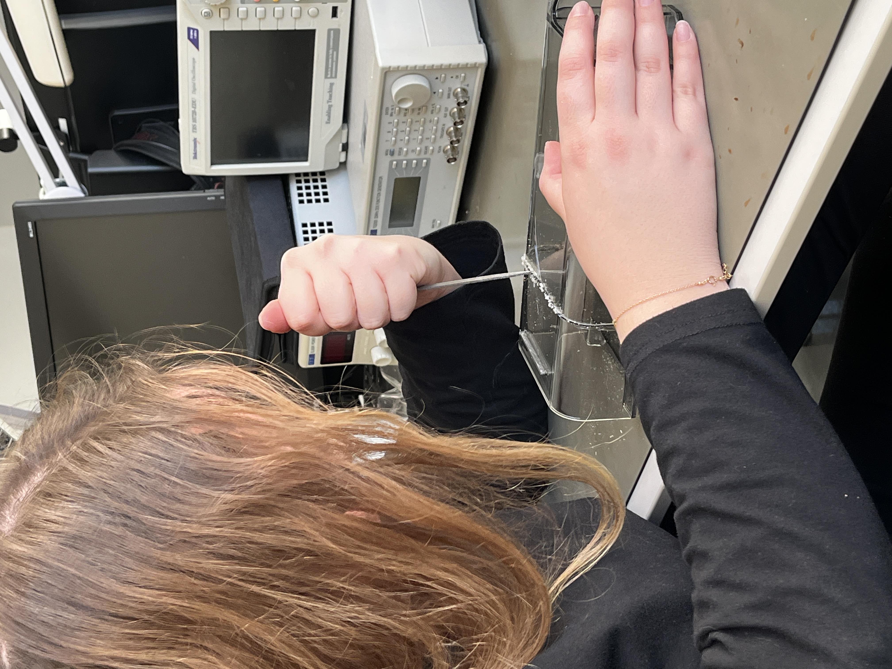
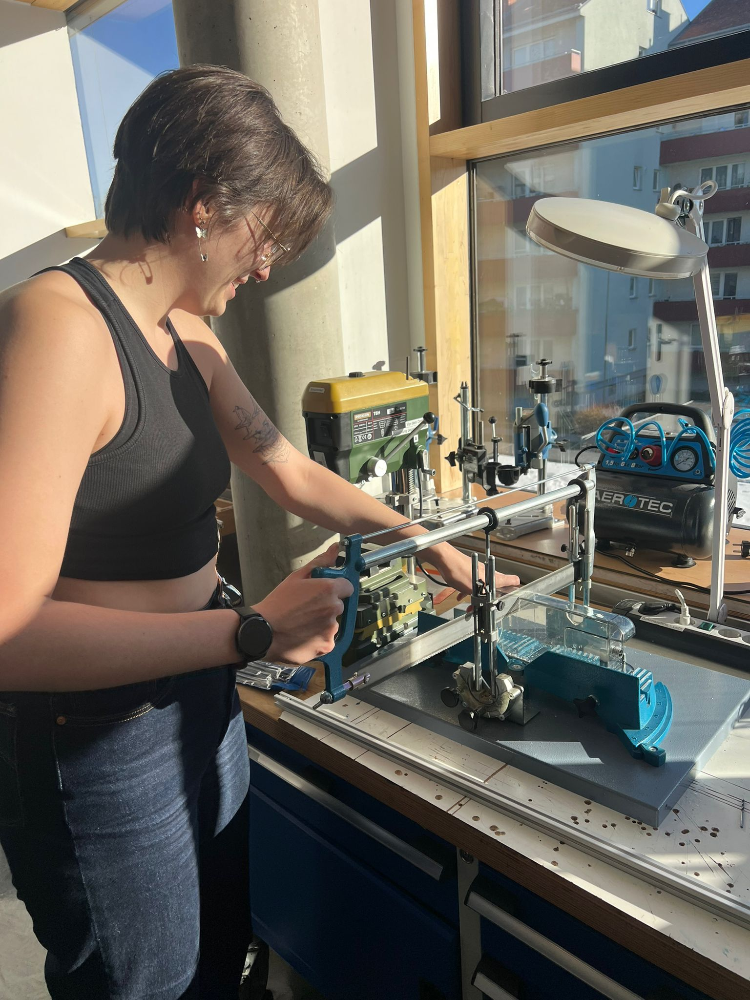
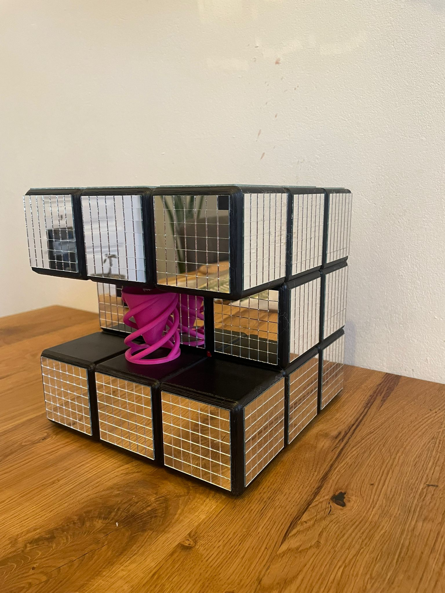
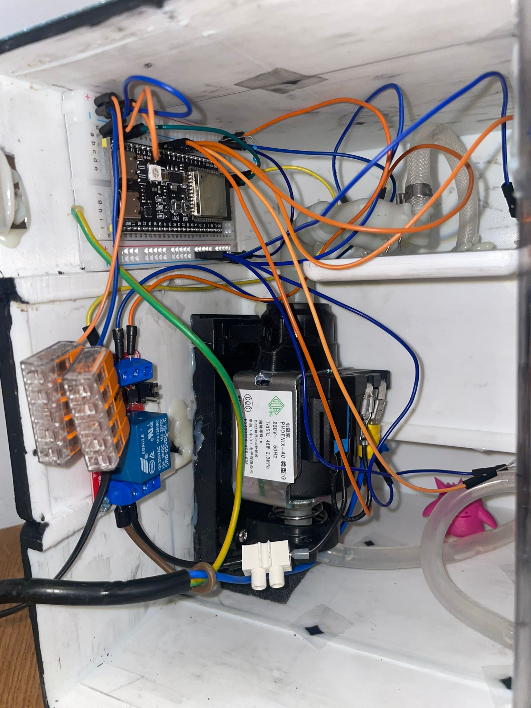
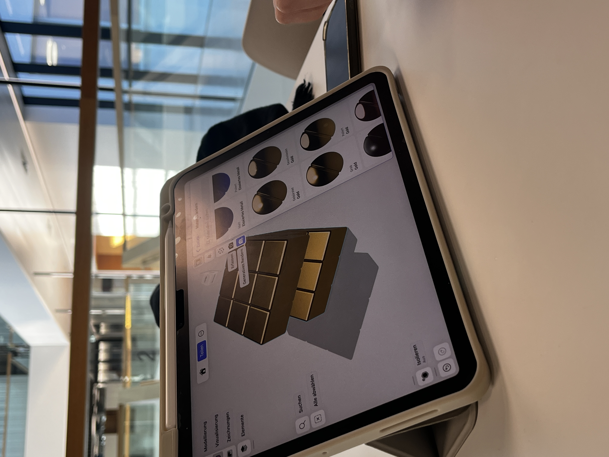
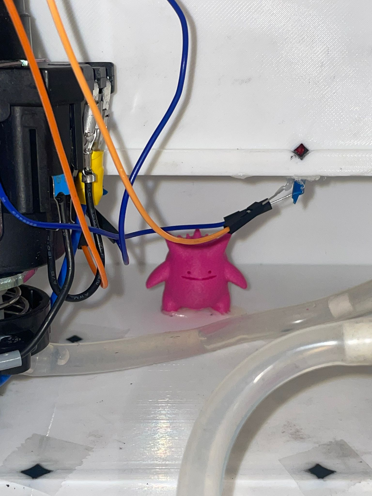
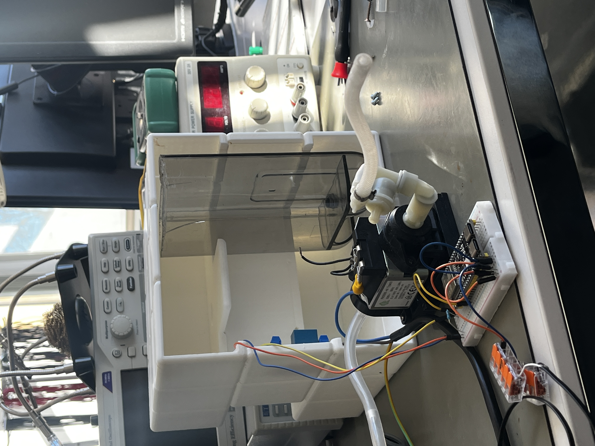
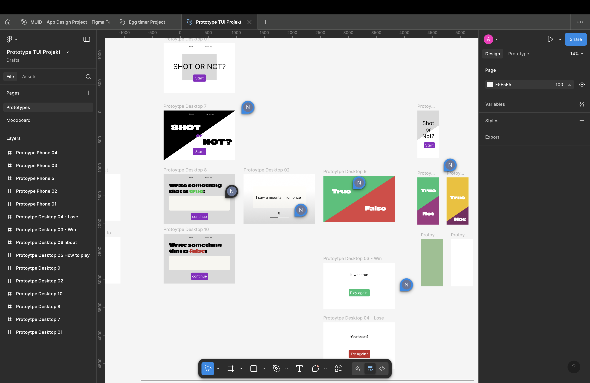

Shot or Not Drinking Game
The Shotinator 3000 is a fun drinking game that you can play with your friends! Go to the website and play a round of Shot or Not! One person writes down a truth or lie (depending on the prompt) and the others have a few seconds to guess whether the statement is true or not. The Shotinator will dispense a shot of whatever liquid is in the tank upon losing the round. The device comes in a (bedazzled) 3D-modeled and printed case, uses an esp32 microcontroller, a repurposed tank from an old coffee machine, and a pump and a valve to control waterflow, as well as a bunch of cables to connect everything and LED-lights that indicate a win or loss in the game. It has a plexiglass door in the back, so you can see all the components and needs to be connected to a power-outlet to work.









